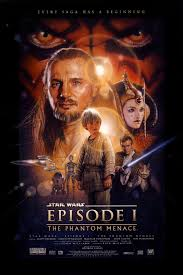

The Phantom Menace
Attack of the Clones
Revenge of the Sith
Star Wars is an American epic space opera media franchise created by George Lucas, which began with the eponymous 1977 film and quickly became a worldwide pop culture phenomenon.
| years | name | rate | image |
|---|---|---|---|
| 1999 | Star Wars: Episode 1 - The Phantom Menace |
6.5 |  |
| 2002 | Star Wars: Episode 2 - Attack of the Clones |
6.6 | |
| 2005 | Star Wars: Episode 3 - Revenge of the Sith |
7.6 |
© 2024 news site